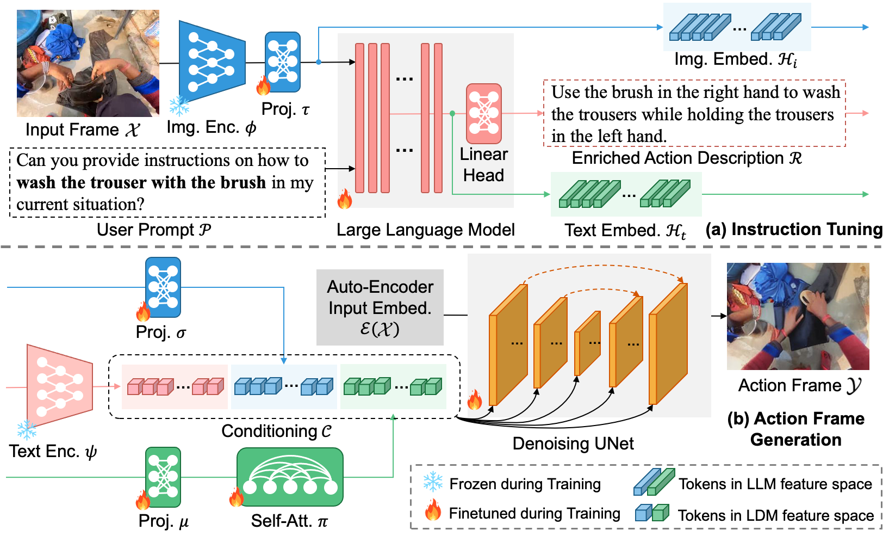

When a user performing a complex task asks a large language model (LLM) for instructions (a) on how to complete the steps, she receives a generic answer and has to translate the guidance into her specific situation. If she is wearing a camera, then the prompt can be augmented with an egocentric view of the scene and passed to a Visual LLM (b), and the description is now contextualized to her situation. But she still faces the challenge of parsing a written description. When she uses our novel LEGO model (c), however, the combined image and prompt are used to automatically generate an image that provides visual guidance exactly in her situation from the egocentric viewpoint. Now she can complete her task seamlessly!
Abstract
Generating instructional images of human daily actions from an egocentric viewpoint serves as a key step towards efficient skill transfer. In this paper, we introduce a novel problem -- egocentric action frame generation. The goal is to synthesize an image depicting an action in the user's context (i.e., action frame) by conditioning on a user prompt and an input egocentric image. Notably, existing egocentric action datasets lack the detailed annotations that describe the execution of actions. Additionally, existing diffusion-based image manipulation models are sub-optimal in controlling the state transition of an action in egocentric image pixel space because of the domain gap. To this end, we propose to Learn EGOcentric (LEGO) action frame generation via visual instruction tuning. First, we introduce a prompt enhancement scheme to generate enriched action descriptions from a visual large language model (VLLM) by visual instruction tuning. Then we propose a novel method to leverage image and text embeddings from the VLLM as additional conditioning to improve the performance of a diffusion model. We validate our model on two egocentric datasets -- Ego4D and Epic-Kitchens. Our experiments show substantial improvement over prior image manipulation models in both quantitative and qualitative evaluation. We also conduct detailed ablation studies and analysis to provide insights in our method.
The Proposed Method

The key insight of our proposed LEGO model is leveraging the strong capability of a VLLM to enhance the diffusion model for egocentric action frame generation. The annotations of existing egocentric datasets do not describe the details of how actions are conducted. As a remedy, we leverage visual instruction tuning to finetune a VLLM that enriches action descriptions based on the egocentric visual prompt. In addition, the existing diffusion-based image manipulation models are limited in understanding egocentric action state transition, due to the domain gap between the exocentric pre-training dataset and the egocentric action dataset for our problem. To bridge this gap, we propose a novel approach that leverages VLLM embeddings to control the state transition of actions and to generate action frames accordingly.
Demo Video
Presentation
Generation Examples
Additional Examples on Ego4D
Additional Examples on Epic-Kitchens
Generating Novel Actions in the Same Contexts
BibTeX
@article{lai2023lego,
title={LEGO: Learning EGOcentric Action Frame Generation via Visual Instruction Tuning},
author={Lai, Bolin and Dai, Xiaoliang and Chen, Lawrence and Pang, Guan and Rehg, James M and Liu, Miao},
journal={arXiv preprint arXiv:2312.03849},
year={2023}
}